ベーン ポンプASSY（4WD） 分解 |
| 1. ベーン ポンプASSY固定 |
| 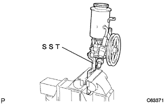 |
SSTを使用して、ベーンポンプASSYをバイスに固定する。
| 2. ベーンポンプオイル リザーバASSY取りはずし |
ボルト3本をはずし、オイルリザーバASSYをベーンポンプハウジングから取りはずす。
マイナス薄刃ドライバーを使用して、OリングをオイルリザーバASSYから取りはずす。
| 3. ポンプ ブラケット FR取りはずし |
ボルト2本をはずし、ブラケットFRおよびブラケットRRを取りはずす。
| 4. フローコントロールバルブ取りはずし |
ソケットレンチ27mmを使用して、プレッシャポートユニオンをハウジングフロントから取りはずす。
マイナス薄刃ドライバーを使用して、プレッシャポートユニオンOリングをプレッシャポートユニオンから取りはずす。
フローコントロールバルブをハウジングフロントから取りはずす。
| 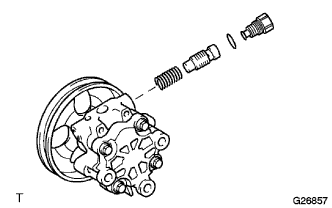 |
コンプレッションスプリングをハウジングフロントから取りはずす。
| 5. パワーステアリング オイル プレッシャ センサ取りはずし |
オイルプレッシャセンサをハウジングフロントから取りはずす。
| 6. ベーンポンプハウジングリヤ取りはずし |
ボルト4本をはずし、ハウジングリヤをハウジングフロントから取りはずす。
| 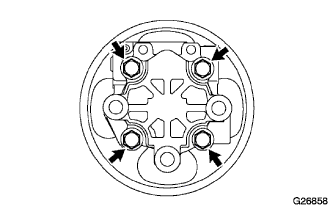 |
ハウジングOリングをハウジングリヤから取りはずす。
| 7. シャフトSUB-ASSY(プーリツキ)取りはずし |
マイナス薄刃ドライバー2本を使用して、シャフトスナップリングをシャフトウィズプーリから取りはずす。
| 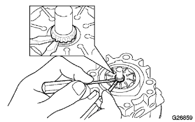 |
シャフトウィズプーリをハウジングリヤから取りはずす。
| 8. ベーンポンプロータ取りはずし |
ベーンポンププレート10枚をベーンポンプロータから取りはずす。
ベーンポンプロータをハウジングフロントから取りはずす。
| 9. ベーンポンプカムリング取りはずし |
| 10. ベーンポンプサイドプレートフロント取りはずし |
サイドプレートフロントをハウジングフロントから取りはずす。
| 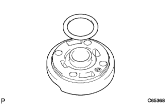 |
サイドプレートOリングNo.1をサイドプレートフロントから取りはずす。
| 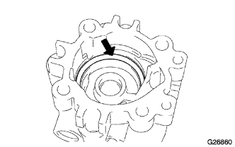 |
サイドプレートOリングNo.2をハウジングフロントから取りはずす。
| 11. ベーンポンプハウジングオイルシール取りはずし |
| 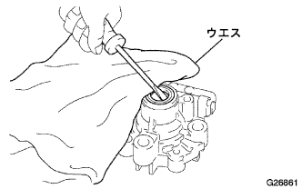 |
マイナスドライバーを使用して、ハウジングオイルシールをハウジングフロントから取りはずす。
| 12. ベーンポンプシャフトおよびベーンポンプハウジングフロント内ブシュ点検 |
マイクロメータおよびキャリパーゲージを使用して、ブシュ内径およびシャフト外径を測定し、オイルクリアランスを算出する。
| 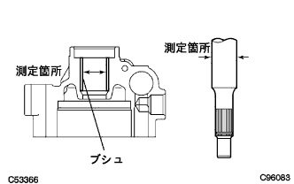 |
ベーンポンプシャフトおよびベーンポンプハウジングフロント内のブシュに傷や著しい摩耗のないことを確認する。
| 13. ベーンポンププレートとベーンポンプロータのすき間点検 |
| 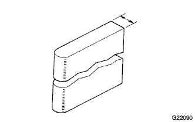 |
マイクロメータを使用して、図の位置の寸法を点検する。
| 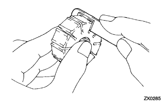 |
シックネスゲージを使用して、ベーンポンププレートとベーンポンプロータのすき間を点検する。
| 14. フローコントロールバルブ点検 |
フローコントロールバルブおよび穴に傷がないことを確認する。
フローコントロールバルブにパワーステアリングフルードを塗布する。
フローコントロールバルブをハウジングフロントに挿入したとき、フローコントロールバルブが自重で滑らかに沈むことを確認する。
フローコントロールバルブの気密点検を行う。
図の穴Aを塞ぐ。
図の穴Bに0.39－0.49MPa｛4-5kgf/cm2｝のエア圧をかける。
| 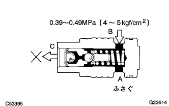 |
図の穴Cよりエアの漏れがないことを確認する。
| 15. フローコントロールバルブコンプレッションスプリング点検 |
コンプレッションスプリングの自由長を測定する。
| 16. プレッシャポートユニオン点検 |
プレッシャポートユニオン内のユニオンシート部に著しい損傷のないことを確認する。